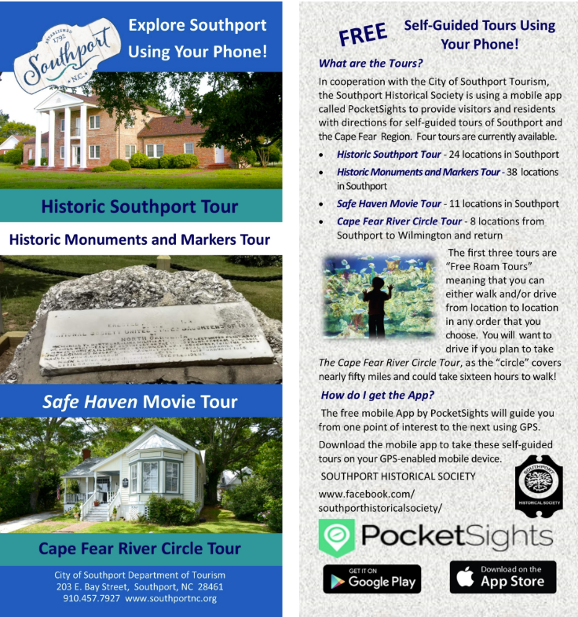

Enjoy the historic sights and stories of Southport, NC
What better way to get a true sense of Southport than a walking tour through the city?
In conjunction with the City of Southport Department of Tourism, the Southport Historical Society has made four self-guided tours available on the free PocketSights mobile app to use with your GPS enabled mobile device. This app provides visitors and residents with directions for each tour and will guide you from one point of interest to the next using GPS. You will be able to listen to the interesting stories associated with each stop.
Download the app now!
Don’t have a mobile device? That’s OK, you can pick up a tour brochure of the Historic Southport Walking Tour from the Visitor’s Center.
Historic Southport
You are invited to tour through Southport and enjoy our historical heritage. The Southport Historical Society and the City of Southport Tourism are proud to provide this guide for our visitors.
The city overlooks the Cape Fear River as it flows to the Atlantic Ocean. Southport has long been known for its refreshing breezes and a relaxed way of life. Our signature live oak trees and historical structures further enhance the charm of the city, which was established in 1792.
The earliest French and Spanish explorers visited this area in 1524 and 1526. The English arrived and settled along the river in the mid-1600’s. Fort Johnston was established as a British fort in 1745
Originally named Smithville, after Benjamin Smith, a Continental general during the Revolution, who later became the governor of North Carolina, Smithville was changed to the name of Southport in 1887.
Southport Monument and Marker Tour
Learn more about Southport by visiting the 38 monuments and markers located throughout the historic areas of Southport.
Southport African American Heritage Tour
Tour 17 locations that bring Southport’s African American history to life. Learn how Southport citizens dealt with the realities of segregation by visiting the sites of historic churches, businesses and the only Black high school in Brunswick County until the 1950s. Included in the tour is the largest extant African American cemetery in Brunswick County which includes an Outdoor Museum.
Safe Haven Movie Locations in Southport
Tour 11 Southport locations where the hit movie Safe Haven was filmed. Safe Haven, was adapted from the Nicholas Sparks novel of the same name. The movie was filmed in Southport during the summer of 2012.
Cape Fear River: Circle Tour
You’ll want to drive if you plan to take this tour! The circle covers more than fifty miles and could take sixteen hours to walk!
Follow the circle tour route from Southport to Wilmington. The tour includes a ride on the Fort Fisher – Southport Ferry and stops at eight of the major historical and tourist attractions in the Cape Fear region.